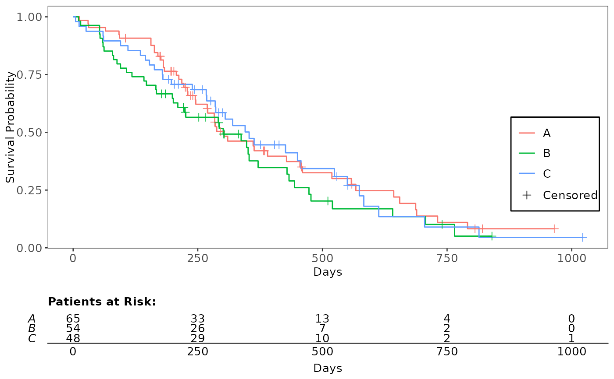
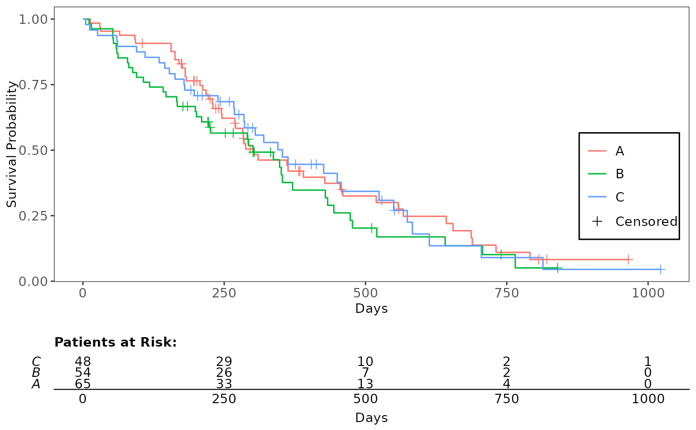
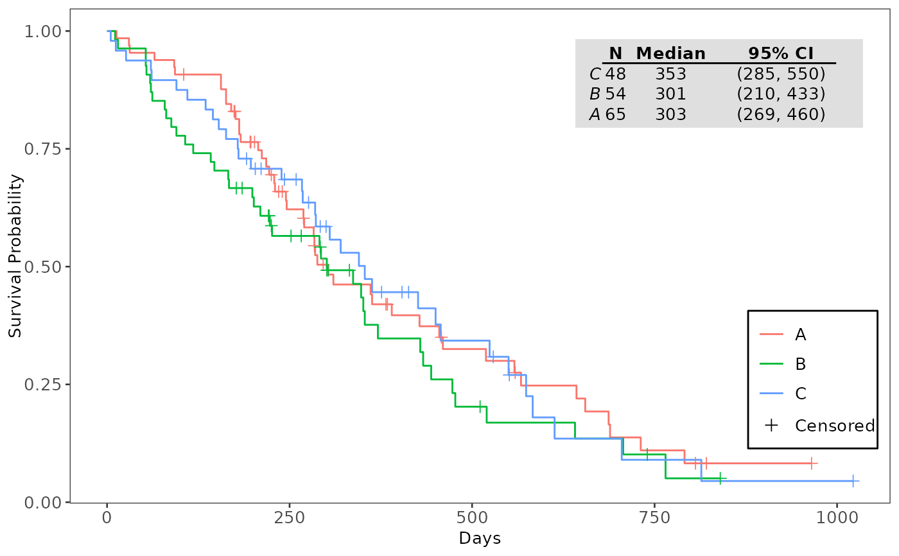
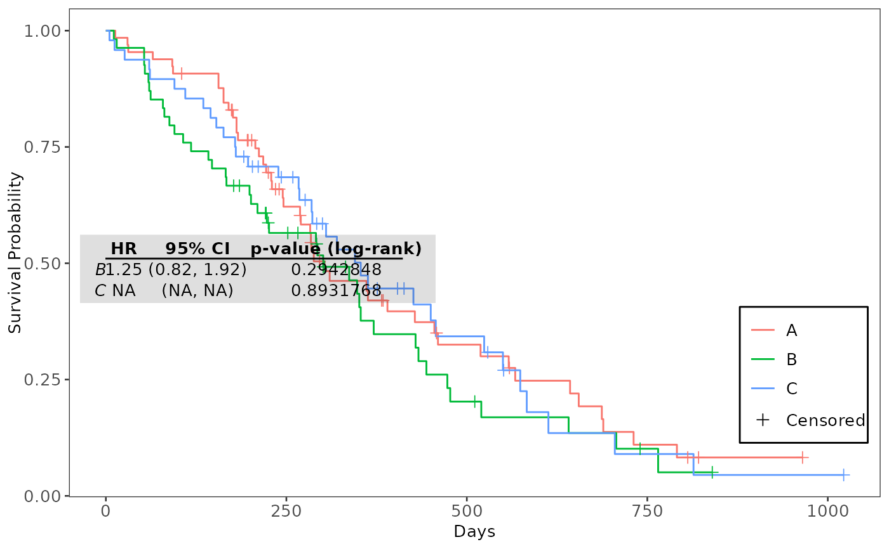

These functions provide capabilities to annotate Kaplan-Meier plots (gg_km()) with additional summary tables,
including median survival times, numbers at risk, and cox proportional hazards results.
The annotations are added using the cowplot package for flexible placement.
annotate_riskdf(
gg_plt,
fit_km,
title = "Patients at Risk:",
rel_height_plot = 0.75,
xlab = "Days",
...
)
annotate_surv_med(gg_plt, fit_km, ...)
annotate_coxph(gg_plt, coxph_tbl, ...)(ggplot2 or cowplot)
The primary plot object (either a ggplot2 or cowplot object) of the Kaplan-Meier plot.
(survfit)
A fitted Kaplan-Meier object of class survfit (from the survival package). This object contains the necessary
survival data used to calculate and generate the content displayed in the annotation table.
(string)
A single logical value indicating whether to include a above the table. Defaults to
""Patients at Risk:"". If NULL, no title is added.
(numeric)
A single numeric value defining the relative height of the main Kaplan-Meier plot area compared
to the 'at-risk' table. This value should be between 0 and 1, where a value closer to 1 gives the main plot
more vertical space. Defaults to 0.75.
(character)
A single character string for the x-axis label on the 'at-risk' table. This typically represents
time (e.g., "Time (Days)").
Additional arguments passed to the control list for the annotation box. These arguments override the default values. Accepted arguments include:
x (numeric): X-coordinate for the box anchor position (0 to 1). Default is 0.29.
y (numeric): Y-coordinate for the box anchor position (0 to 1). Default is 0.51.
w (numeric): Width of the annotation box (0 to 1). Default is 0.4.
h (numeric): Height of the annotation box (0 to 1). Default is 0.125.
(data.frame)
A data frame containing the pre-calculated Cox-PH results, typically from a function like get_cox_pairwise_df.
This data is used to generate the annotation table content.
The function annotate_riskdf returns a cowplot object combining the KM plot and the 'Numbers at Risk'
table.
The function annotate_surv_med returns a cowplot object with the median survival table annotation
added, ready for final display or saving.
The function annotate_coxph returns a cowplot object with the Cox-PH table annotation added.
annotate_riskdf(): The function annotate_riskdf adds a "Numbers at Risk" table below a
Kaplan-Meier plot (gg_km()) using cowplot::plot_grid.
annotate_surv_med(): The annotate_surv_med function adds a median survival time summary table as an
annotation box.
annotate_coxph(): The function annotate_coxph() adds a Cox Proportional Hazards summary table created by
the function get_cox_pairwise_df() as an annotation box.
gg_km(), process_survfit(), and get_cox_pairwise_df() for related functionalities.
# Preparing the Kaplan-Meier Plot
use_lung <- survival::lung
use_lung$arm <- factor(sample(c("A", "B", "C"), nrow(use_lung), replace = TRUE))
use_lung$status <- use_lung$status - 1 # Convert status to 0/1
use_lung <- na.omit(use_lung)
formula <- survival::Surv(time, status) ~ arm
fit_kmg01 <- survival::survfit(formula, use_lung)
surv_plot_data <- process_survfit(fit_kmg01)
plt_kmg01 <- gg_km(surv_plot_data)
# Annotate Plot with Numbers at Risk Table
annotate_riskdf(plt_kmg01, fit_kmg01)

# Change order of y-axis (arm)
use_lung2 <- use_lung
use_lung2$arm <- factor(use_lung2$arm, levels = c("C", "B", "A"))
fit_kmg01 <- survival::survfit(formula, use_lung2)
annotate_riskdf(plt_kmg01, fit_kmg01) # rerun gg_km to change legend order

# Annotate Kaplan-Meier Plot with Median Survival Table
annotate_surv_med(plt_kmg01, fit_kmg01)

# Annotate Kaplan-Meier Plot with Cox-PH Table
coxph_tbl <- get_cox_pairwise_df(formula, data = use_lung, arm = "arm", ref_group = "A")
annotate_coxph(plt_kmg01, coxph_tbl)
